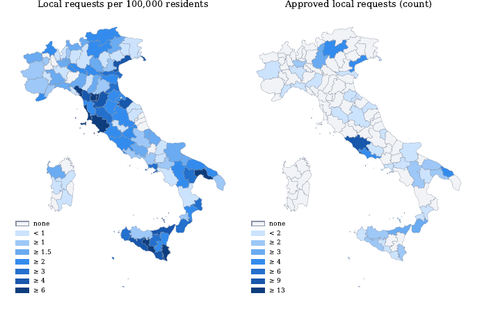
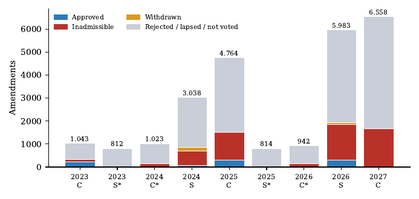
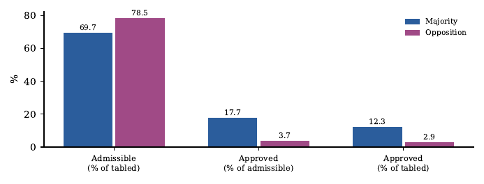
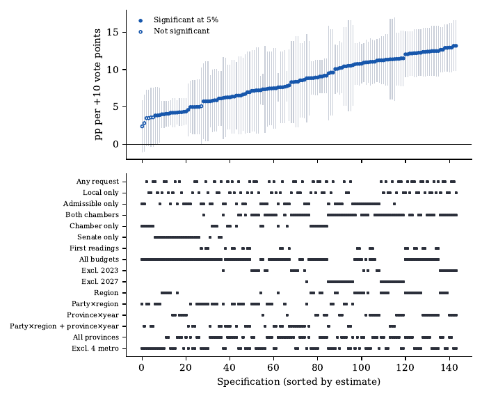

Chi chiede soldi nelle manovre, per dove, e chi li ottiene
Tutte le proposte di modifica alle cinque leggi di bilancio dal 2023 al 2027: firmatari, partiti, inammissibilità, esiti e richieste per singoli territori, messe a confronto con i voti del 2022.

Esplora 2023–2027
Quadro per manovra, ricerca di ogni emendamento con testo e link ufficiale, classifica dei parlamentari, mappa dei soldi chiesti, soldi e voti, studio statistico.
Apri l’esploratore →
Manovra 2027 nel dettaglio
Tutti i 6.558 emendamenti alla Camera, cercabili e filtrabili, con mappe per partito e deputato. In italiano, inglese, spagnolo e francese.
Apri la manovra 2027 →
Sintesi per la stampa
I cinque risultati in una pagina, con numeri, grafici, esempi e avvertenze. Stampabile.
Leggi la sintesi →
Working paper
Where the Votes Are: Electoral Strength and Local Spending Requests in Italian Budget Laws, 2023–2027. Dati, metodo, stime e limiti. Codice R di replica nel repository.
Leggi il PDF →